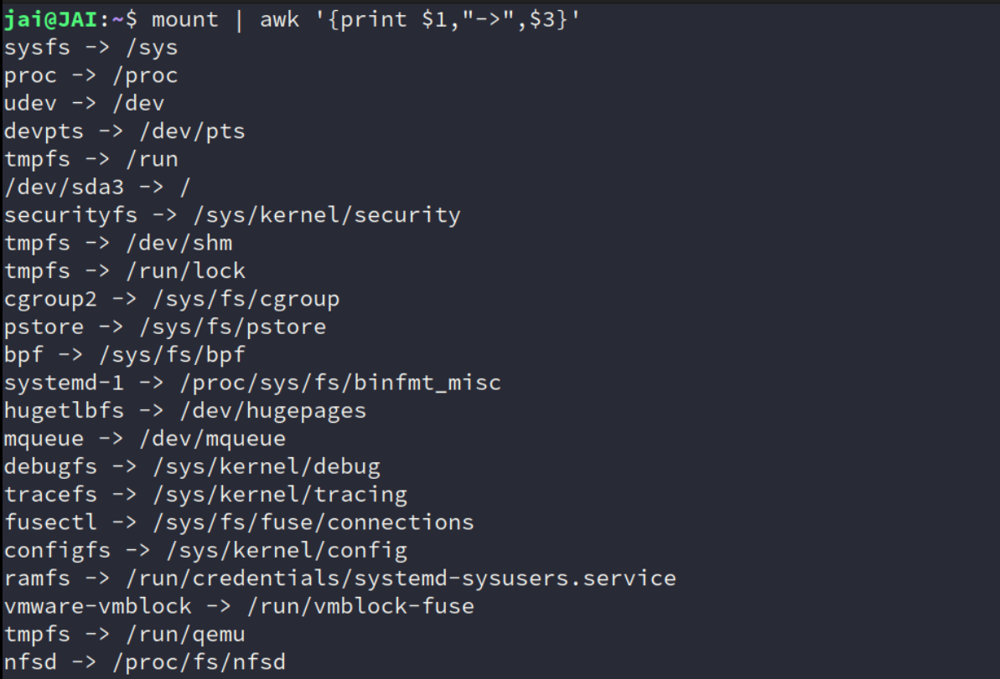

Mount
Introduction
由于一直对文件系统的挂载这一概念迷迷糊糊，所以简单总结，但没想到总结完后一问 DeepSeek，给出了一些很厉害的回答！
concept
mount 我一开始的理解为：操作系统 使我们能够通过 文件系统 来访问 存储设备（磁盘、网络共享、ramdisk）中的文件和目录。
但抽象点说，它的本质就是 将任意存储后端（物理或虚拟）绑定到目录树的逻辑接入点。
无论存储后端是物理磁盘、内存、内核数据结构，甚至是网络服务，只要它能以文件系统接口呈现，均可挂载到目录树。
所以：挂载 = 建立存储后端与目录的映射关系
| 角色 | 物理设备挂载示例 | 虚拟文件系统挂载示例 |
|---|---|---|
| 存储后端 | /dev/sda1（硬盘分区） |
tmpfs（内存）、proc（内核数据） |
| 挂载点 | /mnt/disk（空目录） |
/proc（空目录） |
| 文件系统类型 | ext4、ntfs |
tmpfs、proc |
| 数据来源 | 磁盘扇区 | 内存、内核运行时状态 |
可能还是有点抽象，借助例子来说：
-
物理设备挂载（明确对应硬件）
sudo mount -t ext4 -o async /dev/mmcblk0p1 /mnt/sdcard-
存储后端：物理存在的 SD 卡控制器
/dev/mmcblk0p1 -
文件系统：已预先格式化为
ext4的磁盘分区 -
挂载行为：将磁盘分区的数据通过
ext4驱动映射到/mnt/sdcard目录 -
操作结果：访问
/mnt/sdcard即访问 SD 卡内容可能这个就是我们内心所想的意思，但又不知道怎么表述出来，这个地方就是挂载点了！
具体描述：将物理设备（如 SD 卡）的分区
/dev/mmcblk0p1挂载到指定的目录/mnt/sdcard，使该分区的数据通过ext4文件系统可被访问。通过访问/mnt/sdcard，我们就可以直接操作 SD 卡的内容。
-
-
虚拟文件系统挂载（无物理设备）
sudo mount -t tmpfs -o size=512M tmpfs /mnt/ramdisk- 存储后端：内核动态分配的内存区域（
tmpfs驱动管理） - 文件系统：挂载时自动创建内存中的文件系统结构
- 挂载行为：将内存区域模拟为块设备并绑定到
/mnt/ramdisk - 操作结果：访问该目录即操作内存空间
- 存储后端：内核动态分配的内存区域（
-
内核数据挂载（无存储介质）
mount -t proc none /proc- 存储后端：
none（占位符，实际数据来自内核/proc子系统） - 文件系统：
proc驱动将内核进程信息转换为文件形式 - 挂载行为：建立内核数据结构到
/proc的映射 - 操作结果：读取
/proc/cpuinfo等文件即读取内核实时数据
- 存储后端：
具体再对比一下，大概就有印象了！
| 概念 | 物理设备挂载 | 虚拟文件系统挂载 |
|---|---|---|
| 存储后端存在性 | 必须存在 /dev/xxx 设备节点 |
无需物理设备，由内核驱动提供 |
| 数据持久性 | 断电保留 | 内存挂载：数据易失 |
| 挂载参数意义 | -t 指定磁盘上文件系统类型 |
-t 指定内核驱动类型 |
| 设备参数作用 | 必须指向真实设备路径 | 可填任意值（如 none） |
底层逻辑
- 挂载点目录
- 本质是一个空目录（这里建议新建，否则原有内容会被覆盖隐藏，就像老师上课的例子）
- 挂载后成为访问存储后端的“入口”（类似门牌号指向具体房间）
- 文件系统驱动
- 物理设备：需对应磁盘分区的实际格式（如
ext4） - 虚拟文件系统：由内核模块动态生成数据结构（如
tmpfs）
- 物理设备：需对应磁盘分区的实际格式（如
- 设备参数的特殊性
- 对虚拟文件系统，设备参数无实际意义（填
none或任意字符串均可） - 对物理设备，必须准确指向设备路径（如
/dev/sda1）
- 对虚拟文件系统，设备参数无实际意义（填
More examples
-
挂载SD卡/eMMC分区
# 查看设备识别符（假设SD卡为 /dev/mmcblk0p1） lsblk # 挂载到 /mnt/sdcard（ext4格式，启用异步写入） sudo mount -t ext4 -o async /dev/mmcblk0p1 /mnt/sdcard底层原理：
- 内核通过MMC/SD子系统识别设备，生成
/dev/mmcblk*节点。 ext4驱动解析超级块（superblock），建立目录树与物理块的映射。
- 内核通过MMC/SD子系统识别设备，生成
-
挂载网络文件系统（NFS）
# 挂载远程服务器的NFS共享到本地 sudo mount -t nfs -o vers=4 192.168.1.100:/data /mnt/nfs网络协议栈流程：
- 客户端通过RPC与NFS服务器协商协议版本。
- 服务器导出
/data目录的句柄（file handle）。 - 本地VFS将远程目录透明映射到
/mnt/nfs。
-
挂载内存文件系统（tmpfs）
# 创建高性能临时存储（大小限制为512MB） sudo mount -t tmpfs -o size=512M tmpfs /mnt/ramdisk内核机制：
tmpfs利用虚拟内存（VM）子系统，数据存储在RAM+Swap中。- 适用于高频读写临时文件（如浏览器缓存）。
-
挂载ISO镜像文件
# 使用loop设备挂载ISO镜像 sudo mount -t iso9660 -o loop ubuntu-22.04.iso /mnt/iso设备虚拟化：
loop设备驱动将文件模拟为块设备，实现镜像内容的透明访问。
-
重新挂载为只读（防止数据损坏）
# 运行时切换为只读模式（用于系统维护） sudo mount -o remount,ro /应用场景：
- 系统升级时保护根文件系统。
- 嵌入式设备防止异常断电导致文件系统损坏。
-
挂载OverlayFS（容器基础）
# 联合挂载实现分层文件系统 mount -t overlay overlay -o lowerdir=/base,upperdir=/changes,workdir=/work /merged容器技术依赖：
- Docker/容器依赖OverlayFS实现镜像层与可写层的合并。
More practice
实验一：观察挂载信息
# 查看所有挂载点及其后端
mount | awk '{print $1,"->",$3}'

如果对上面的内容还有兴趣，比如，各种 file system 都是什么，继续问问 DeepSeek 吧！
实验二：挂载点与物理设备解耦
# 将同一物理设备挂载到多个目录
sudo mkdir -p /mnt/disk1 /mnt/disk2
sudo mount /dev/sda1 /mnt/disk1
sudo mount /dev/sda1 /mnt/disk2
# 挂载分区，假设时 都是ext4
sudo mount -t ext4 /dev/sda1 /mnt/disk1
sudo mount -t ext4 /dev/sda1 /mnt/disk2
# 验证挂载结果
df -h
# 测试写操作同步
echo "This is a test file" | sudo tee /mnt/disk1/test.txt
ls /mnt/disk2
cat /mnt/disk2/test.txt
# 进一步验证
echo "Modified content" | sudo tee /mnt/disk2/test.txt
# 卸载分区
sudo umount /mnt/disk1
sudo umount /mnt/disk2
- 结果：通过
/mnt/disk1和/mnt/disk2访问相同数据（写操作会同步）
实验三：覆盖挂载
mkdir -p /mnt/test && echo "Original" | sudo tee /mnt/test/file
sudo mount -t tmpfs tmpfs /mnt/test
ls /mnt/test # 此时看到的是 tmpfs 空内容
sudo umount /mnt/test
ls /mnt/test # 恢复原有 file 文件
Underlying implementation and usage
按照我的性格，我还是想探究一下 Linux 底层相关的技术。
VFS（Virtual File System）抽象层
-
核心作用： 统一各类文件系统接口（ext4、NFS、proc等），提供
open()、read()等标准系统调用。 -
数据结构：
struct super_block // 文件系统超级块信息 struct inode // 文件元数据（权限、大小等） struct dentry // 目录项缓存（加速路径解析）
挂载表管理
-
查看当前挂载信息：
cat /proc/mounts # 内核态挂载记录 mount | column -t # 用户态格式化输出 -
持久化配置： 通过
/etc/fstab定义启动时自动挂载项：# 示例：开机自动挂载UUID=1234的ext4分区到/data UUID=1234 /data ext4 defaults 0 2
History
当然，按照习惯，也想简单看看这方面的历史呀。
1. Unix传统（1970s）
- 原始挂载逻辑：
早期Unix系统仅支持本地磁盘挂载，
mount命令直接操作内核数据结构。 - 设计约束： 单用户模式下手动挂载，无自动化管理。
2. Linux革新（1990s-）
- 动态设备管理：
udev守护进程自动创建
/dev节点，支持热插拔（如USB设备即插即用）。 - 文件系统多样性： 支持超过100种文件系统，包括网络（NFS）、虚拟（procfs）、集群（GFS2）等。
3. 现代趋势
- 命名空间隔离：
容器技术通过
mount namespace实现挂载点隔离（unshare -m）。 - 用户态文件系统： FUSE（Filesystem in Userspace）允许非特权用户开发文件系统（如SSHFS）
Basic Summary
物理设备挂载：将磁盘/USB等存储介质的文件系统接入目录树（必须指定设备路径）
- 虚拟文件系统挂载：通过内核驱动在内存或运行时数据中创建文件系统（无需物理设备）
- 挂载点：仅仅是数据访问的入口，其内容由挂载的存储后端决定
mount命令的核心作用：建立存储后端（无论物理或虚拟）与目录的映射关系，与是否创建文件系统无关（文件系统可能已存在或由内核动态生成）。
Debug
挂载失败常见原因
| 错误现象 | 排查命令 | 解决方案 | |
|---|---|---|---|
mount: unknown filesystem type |
lsmod | grep <类型> |
加载内核模块（modprobe ext4） |
|
mount: permission denied |
ls -l /dev/sda1 |
调整权限或使用sudo |
|
mount: wrong fs type |
blkid /dev/sda1 |
格式化或指定正确-t类型 |
高级调试工具
-
跟踪系统调用：
strace mount -t ext4 /dev/sda1 /mnt又是
strace！这个工具真的时很好用！ -
内核调试日志：
dmesg | tail -20 # 查看设备识别和挂载错误
成为专家
-
理解VFS架构： 阅读《Linux Kernel Development》中文件系统章节。
-
动手实验：
-
在QEMU虚拟机中添加虚拟磁盘并练习挂载：
qemu-img create disk.img 1G mkfs.ext4 disk.img sudo mount -o loop disk.img /mnt
-
-
源码分析： 研究Linux内核源码中
fs/namespace.c（挂载逻辑实现）。 -
性能调优： 对比不同挂载选项（如
noatimevsrelatime）对I/O的影响：# 使用fio进行基准测试 fio --name=test --filename=/mnt/testfile --size=1G --rw=randrw
Real example from DeepSeek
1. 项目背景
- 设备类型：工业控制网关
- 硬件配置：
- SoC：NXP i.MX8M Plus
- 存储：eMMC 32GB（存放Bootloader、内核、根文件系统）
- 外部接口：双千兆以太网、RS485、CAN总线
- 软件架构：
- Bootloader：U-Boot 2022.04
- 内核：Linux 5.15 LTS（带实时补丁）
- 根文件系统：Yocto构建的只读SquashFS + OverlayFS可写层
- 关键服务：Modbus TCP协议栈、OPC UA服务器
2. 问题现象
- 现场报告：
某批次设备在工厂部署后，约5%的设备启动时出现以下错误：
[ 3.215876] VFS: Cannot open root device "mmcblk2p2" (错误号-19): 未知的块设备
[ 3.223451] 请附加正确的"root="启动选项
[ 3.227912] Kernel panic - not syncing: VFS: Unable to mount root fs on unknown-block(179,2)
- 仅特定产线设备出现
- 重启后问题依旧
- 无法进入救援模式
3. 企业级排查流程
阶段1：现场数据采集（Field Data Collection）
- 收集项目：
# 1. 导出内核启动日志 dmesg > /mnt/logs/dmesg_failure.log # 2. 存储设备信息（需拆机连接调试串口） mmc extcsd read /dev/mmcblk2 > emmc_extcsd.txt lsblk -o NAME,SIZE,FSTYPE,MOUNTPOINT > block_devices.txt # 3. U-Boot环境变量备份 fw_printenv > uboot_env.txt
阶段2：实验室复现与深度分析
- 硬件检测：
- 使用示波器检测eMMC的CLK/DATA信号完整性
- eMMC供电电压测试（标准应为3.3V±5%）
-
发现异常：故障设备eMMC VCCQ电压为1.6V（低于要求的1.8V）
-
软件分析：
- 文件系统完整性检查：
# 通过JTAG导出eMMC镜像 dd if=/dev/mmcblk2 of=emmc_dump.img bs=1M # 挂载并检查分区 sudo mount -o loop,offset=$((512*2048)) emmc_dump.img /mnt/emmc fsck.ext4 -n /mnt/emmc/rootfs # 返回"Superblock invalid"错误 - 内核驱动调试：
# 启用MMC子系统调试日志 echo 0xffff > /sys/module/mmc_core/parameters/debug dmesg | grep mmc # 输出显示多次CMD8超时
阶段3：根因定位（Root Cause Analysis）
- 综合结论：
- 硬件缺陷：某批次eMMC芯片的VCCQ LDO（低压差稳压器）存在制造偏差，导致电压不稳。
- 软件容错不足：内核MMC驱动未正确处理电压协商失败，引发文件系统超级块损坏。
4. 企业级解决方案
硬件层修复
- 供应链管理：
- 对问题批次eMMC供应商启动8D报告流程
- 增加eMMC上电时序测试项（使用ATE自动化测试设备）
软件层加固
- 内核驱动增强：
// drivers/mmc/core/mmc.c 修改示例 static int mmc_init_card(...) { // 增加电压容限检测 if (ocr & (RANGE_ERROR | VOLTAGE_ERROR)) { pr_warn("MMC voltage negotiation failed, retrying..."); msleep(100); return -ETIMEDOUT; // 触发U-Boot重试机制 } } - 文件系统冗余设计：
- 在eMMC中存储两份Superblock备份：
mkfs.ext4 -O sparse_super,^resize_inode -b 4096 -N 4 /dev/mmcblk2p2
现场应急措施
- OTA热修复脚本：
#!/bin/bash # 检查Superblock备份并恢复 backup_superblock="/dev/mmcblk2p2:32768" if ! dumpe2fs /dev/mmcblk2p2 | grep "Backup superblock"; then e2fsck -b $backup_superblock -y /dev/mmcblk2p2 reboot fi
5. 企业级质量保障体系
自动化测试流水线
- 新增测试用例：
| 测试类型 | 测试工具 | 验证目标 | | ---------------- | --------------- | ------------------------------ | | 电源扰动测试 | Chroma 33612 | 验证1.8V±10%波动下的eMMC稳定性 | | 文件系统异常注入 | fault-inject.ko | 模拟Superblock损坏后的恢复能力 | | 长时压力测试 | fio + watchdog | 72小时连续写入后检查数据完整性 |
运维监控增强
- 内核实时监控：
// 添加eMMC健康状态监控 static void mmc_health_monitor(struct work_struct *work) { struct mmc_host *host = container_of(work, struct mmc_host, monitor_work); u32 life_time = mmc_get_speed_class(host); if (life_time > WEAR_OUT_THRESHOLD) { syslog(LOG_ALERT, "eMMC寿命预警: 已消耗%d%%耐久度", life_time); } }
6. 经验总结与行业启示
- 硬件/软件协同设计：
- 嵌入式存储子系统需通过DFMEA（设计失效模式分析）识别单点故障
-
关键参数（如电压、时序）应纳入生产端自动化测试
-
企业级代码规范：
# 示例：存储操作必须包含重试和日志 def write_config(data): retries = 3 while retries > 0: try: with open("/cfg/settings.json", "w") as f: f.write(data) os.fsync(f.fileno()) # 确保数据落盘 break except IOError as e: logging.error(f"写入配置失败: {e}, 剩余重试次数{retries-1}") retries -= 1 time.sleep(0.5) -
成本与可靠性平衡：
| 方案 | 成本 | 可靠性 | 适用场景 |
|---|---|---|---|
| 单eMMC存储 | 低 | 中 | 消费级设备 |
| eMMC+SPI NOR双备份 | 中 | 高 | 工业控制器 |
| eMMC+SSD RAID1 | 高 | 极高 | 数据中心边缘节点 |
通过此案例，可深刻理解企业级嵌入式Linux项目中：
1. 跨团队协作：硬件工程师、驱动开发者、QA团队需紧密配合
2. 全生命周期管理：从设计、生产到现场维护均需系统化方案
3. 防御性编程：存储子系统必须预设故障恢复路径
Reference
- Mount (computing) - Wikipedia
- 《Operating Systems Three Easy Piece》—— (Remzi Arpaci)